It seems all of SEO Twitter was whitelisted first to get a preview and early access to Google's new generative AI experience on the SERPs, something that many others are still on the waitlist for.
There's a ton of chatter, so I put together a post on what the new experience looks like for a multitude of different keywords and query types including local, transactional (ecommerce), SERPs that pull up featured snippets, and lead generation based SERPs, and more.
It also appears that you will be able to give Google commands, such as comparing items or businesses, or asking for advice.
Key Takeaways
Reviews will be more important
Google's local results for their SGE seem like they rely more on ratings than listicles or "Best of" articles.
The Search Journey is Now More Relevant Than Ever
Google is automatically adopting Generative AI when it comes to both local and ecommerce/transactional queries. Perhaps trying to get their foot in the door when it comes to transactions?
Even if a query is clearly transactional, Google will surface some informational content, and give users a toolbar to ask follow up questions - that means that SEOs need to start thinking about the search journey as multi-dimensional.
Sometimes, Google is confused about query types
Sometimes Google's generative AI can't decide if a query falls into a certain bucket. Is it a local query? A transactional query?
Different results than traditional organic
Being in the top 3 organic results doesn't guarantee that you will be featured in the SGE carousel.
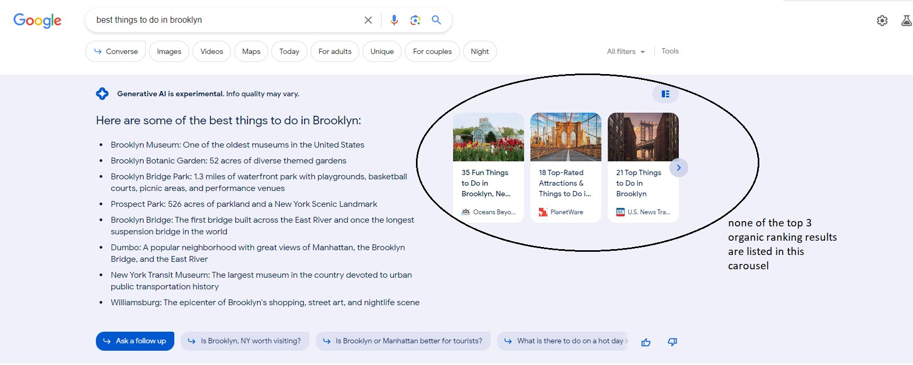SGE and plagiarism
It sometimes clearly rips the content exactly as it is stated. Is it what the people want? Probably, but if featured snippets caused backlash, then generative AI will definitely sound some alarms.
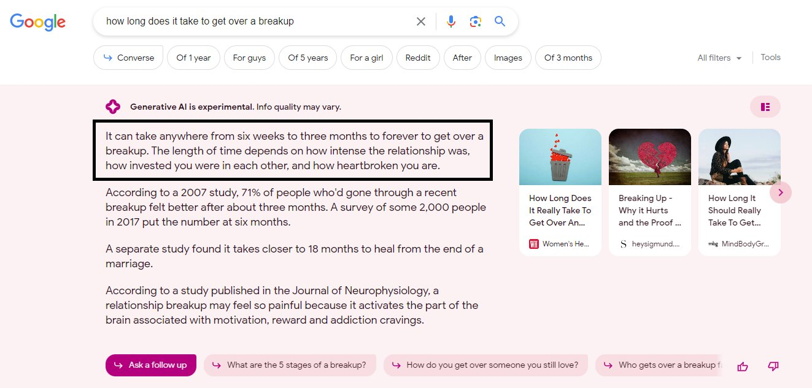SGE will sometimes not answer a question
Take, for example, the following question asking for a restaurant's hours. Google will instead prompt you to click through to a restaurant or find the answer yourself.
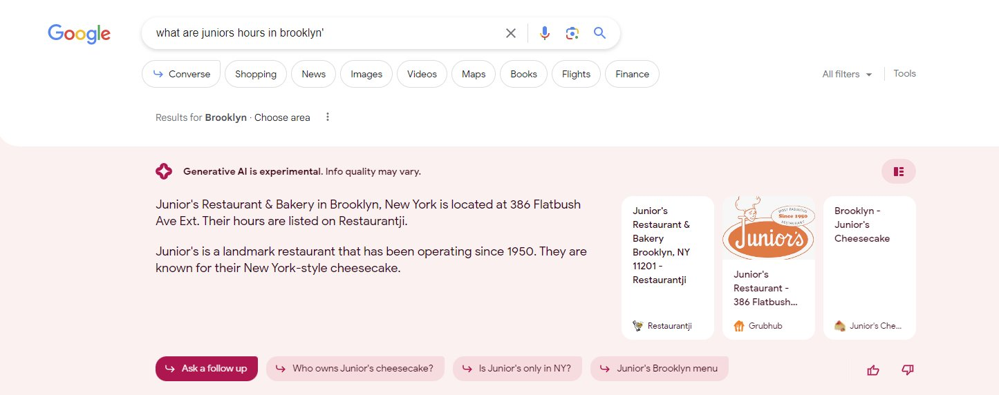SGE load time is long
Loading takes quite a while and generative AI seems to go against Google's ideology that "low cumulative shift is important."
More Examples of Google's SGE
Local Queries
Google is removing the "More Places" in local queries (reducing the opportunities in the value pack), and is aiming to create a more modular experience for their Google Places rather than entering a local finder or Google Maps in its entirety.
Users will now be able to click on a scrollable places listing; and it looks like that is in response to preparing for SGE:
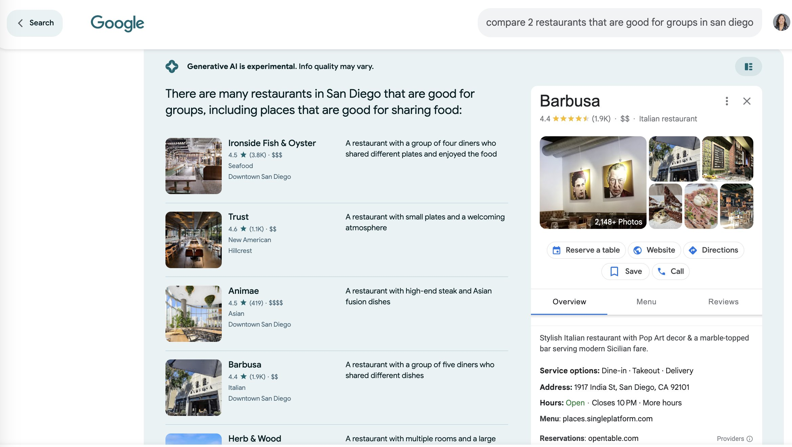 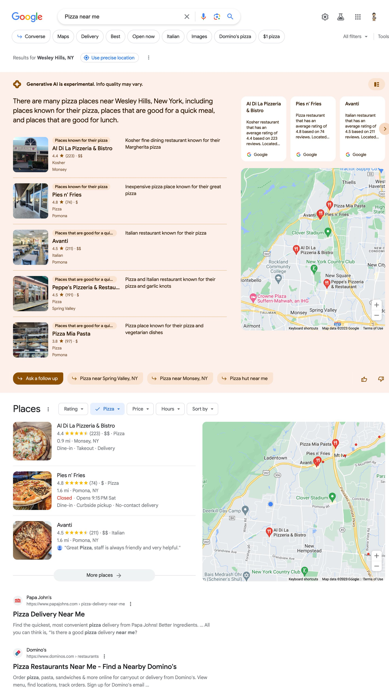"Best" Queries
Many queries have duplicate results, and are a mirror of what is already showing featured snippets. Some queries also leave it up to the user to decide if the answer is contradictory or not; for example, the following shows Wednesday and Saturday twice. This is also another clear example of AI taking what the top result is saying and – dare I say again – plagiarizing it?
To elaborate on a system that Google is trying to accomplish; it seems like they are banking on the featured snippet at first, and experimenting with coming up with a better answer, in a (sometimes) duplicate, fully AI-generated, response.
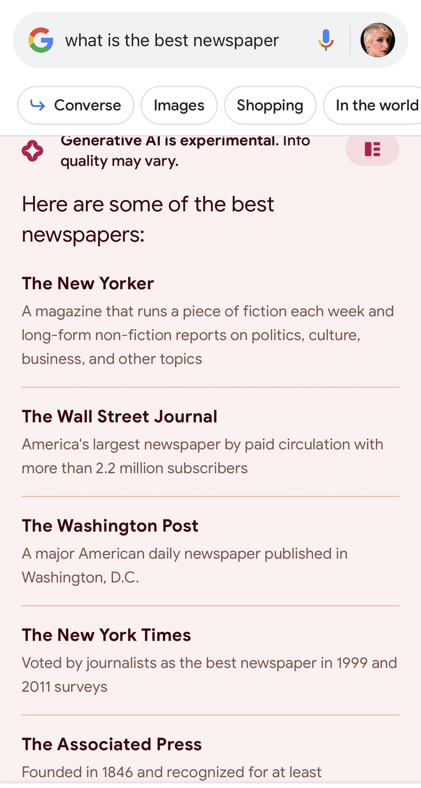 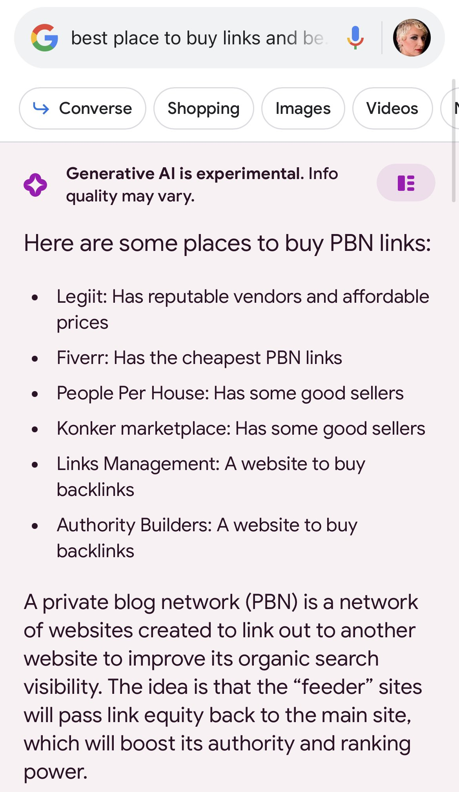Real Estate
Here are some real estate SGE queries:
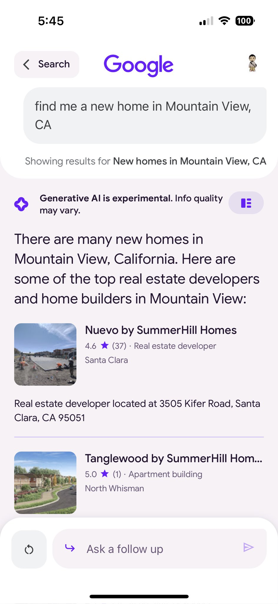Real Time
It will be interesting to see if Google will soon have some SERPs that are in real time, such as a surf report or the weather:
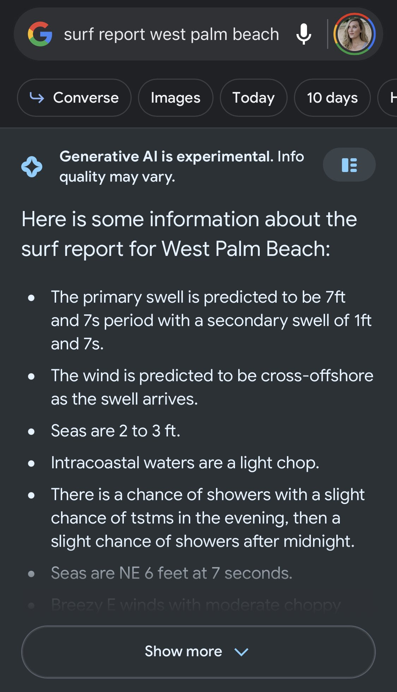Financial
It seems like Google is taking its cue from the crypto moon boys, and letting people know that this is "not financial advice":
Gossip
The many angles of JLo's love for grilled cheese:
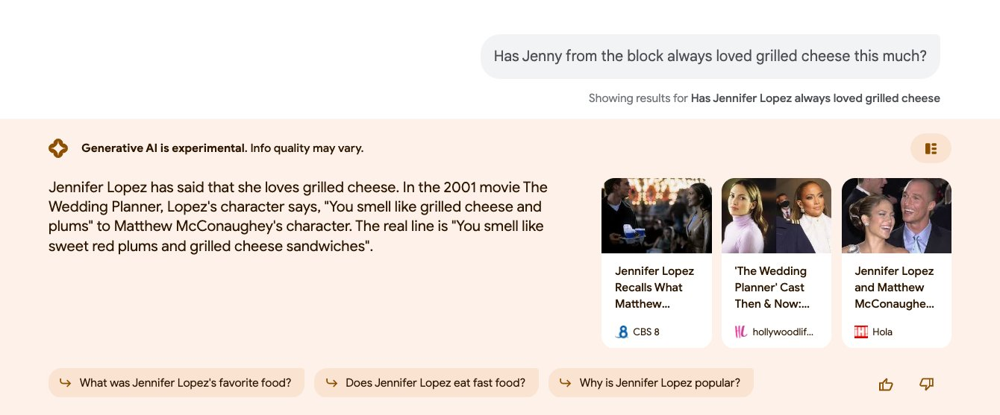SEO Queries
Here are some of the favorite SERPS of every SEO:
Advice Queries
It will be interesting to see what happens over time with the advice that SGE provides. This could be potentially dangerous if it pertains to health, or any topic that necessitates specific action:
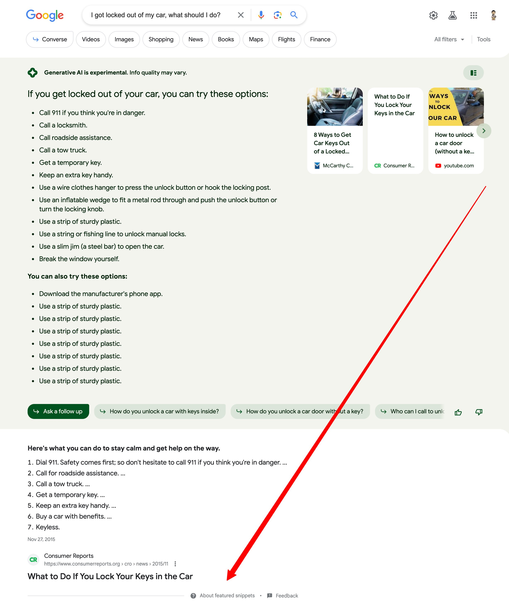